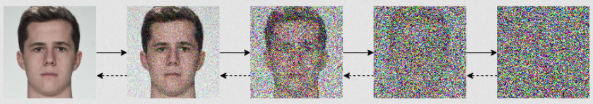
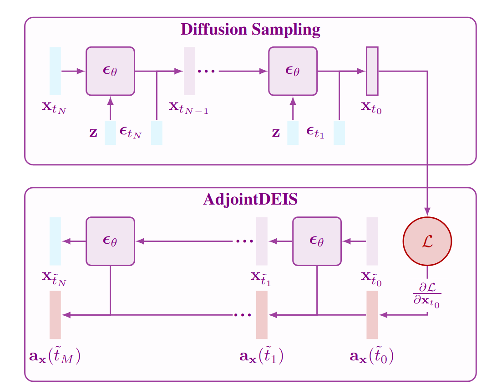

Introduction
Guided generation is an important problem within machine learning. Solutions to this problem enable us to steer the output of the generative process to some desired output. This is especially important for allowing us to inject creative control into generative models. While there are several forms of this problem, we focus on problems which optimize the output of a generative model towards some goal defined by a guidance (or loss) function defined on the output. These particular approaches excel in steering the generative process to perform adversarial ML attacks, e.g., bypassing security features, attacking Face Recognition (FR) systems, &c.
More formally, suppose we have some $\R^d$ generative model, $\bsg_\theta: \R^z \times \R^c \to \R^d$ parameterized by $\theta \in \R^m$ which takes an initial latent $\bfz \in \R^z$ and conditional information $\mathbf{c} \in \R^c$. Furthermore, assume we have a scalar-valued guidance function $\mathcal{L}: \R^d \to \R$. Then the guided generation problem can be expressed as an optimization problem:
\begin{equation} \label{eq:opt_init} \argmin_{\bfz, \mathbf{c}, \theta} \quad \mathcal{L}(\bsg_\theta(\bfz, \mathbf{c})). \end{equation}I.e., we wish to find the optimal $\bfz$, $\mathbf{c}$, and $\theta$ which minimize our guidance function. A very natural solution to this kind of problem is to perform gradient descent by using reverse-mode automatic differentiation to find the gradients.
In this post we focus on a technique for finding the gradients of a very popular class of generative models known as diffusion models by solving the continuous adjoint equations.
Diffusion models
First we give a brief introduction on diffusion models and score-based generative modeling. More comprehensive coverage can be found in Yang Song's blog post and Lilian Weng's blog post on this topic.
Diffusion models start with a diffusion process which perturbs the original data distribution $p_{\textrm{data}}(\bfx)$ on $\R^d$ into isotropic Gaussian noise $\mathcal{N}(\mathbf 0, \mathbf I)$. This process can be modeled with an Itô stochastic differential equation (SDE) of the form
\begin{equation} \label{eq:ito_diffusion} \rmd\bfx_t = \underbrace{f(t)\bfx_t\; \rmd t}_{\textrm{deterministic term $\approx$ an ODE}} + \underbrace{g(t)\; \rmd\bfw_t,}_{\textrm{stochastic term}} \end{equation}where $f, g$ are real-valued functions, $\{\bfw_t\}_{t \in [0, T]}$ is the standard Wiener process on time $[0, T]$, and $\rmd\bfw_t$ can be thought of as infinitesimal white noise. The drift coefficient $f(t)\bfx_t$ is the deterministic part of the SDE and $f(t)\bfx_t\;\rmd t$ can be thought of as the ODE term of the SDE. Conversely, the diffusion coefficient $g(t)$ is the stochastic part of the SDE which controls how much noise is injected into the system.
The solution to this SDE is a continuous collection of random variables $\{\bfx_t\}_{t \in [0, T]}$ over the real interval $[0, T]$; these random variables trace stochastic trajectories over the time interval. Let $p_t(\bfx_t)$ denote the marginal probability density function of $\bfx_t$. Then $p_0(\bfx_0) = p_{\textrm{data}}(\bfx)$ is the data distribution; likewise, for some sufficiently large $T \in \R$ the terminal distribution $p_T(\bfx_T)$ is close to some tractable noise distribution $\pi(\bfx)$, called the prior distribution.

Reversing the diffusion SDE
So far we have only covered how to destroy data by perturbing it with white noise; however, for sampling we need to be able to reverse this process to create data from noise. Remarkably, showed that the Itô SDE in Equation (\ref{eq:ito_diffusion}) has a corresponding reverse SDE given in closed form by
\begin{equation} \label{eq:rev_sde} \rmd\bfx_t = [f(t)\bfx_t - g^2(t)\underbrace{\nabla_\bfx\log p_t(\bfx_t)}_{\textrm{score function}}]\;\rmd t + g(t)\; \rmd\bar\bfw_t, \end{equation}where $\rmd t$ denotes a negative infinitesimal timestep and $\nabla_\bfx\log p_t(\bfx_t)$ denotes the score function of $p_t(\bfx_t)$. Note that the stochastic term is now driven by a different Wiener process defined on the backwards flow of time, i.e., $\bar\bfw_T = \mathbf 0$ a.s.For technical reasons we use the abbreviation a.s. which denotes almost surely, i.e., an event happens almost surely if it happens with probability 1. For a modern derivation of Anderson's result we recommend checking out the excellent blog post by Ludwig Winkler on this topic.
To train a diffusion model, then, we just need to learn the score function via score matching or some closely related quantity like the added noise or $\bfx_0$-prediction. Many diffusion models use the following choice of drift and diffusion coefficients:
\begin{equation} f(t) = \frac{\rmd \log \alpha_t}{\rmd t},\qquad g^2(t)= \frac{\rmd \sigma_t^2}{\rmd t} - 2 \frac{\rmd \log \alpha_t}{\rmd t} \sigma_t^2, \end{equation}where $\alpha_t,\sigma_t$ form a noise schedule such that $\alpha_t^2 + \sigma_t^2 = 1$ and
\begin{equation} \bfx_t = \alpha_t\bfx_0 + \sigma_t\bseps_t, \qquad \bseps_t \sim \mathcal{N}(\mathbf 0, \mathbf I). \end{equation}Diffusion models which use noise prediction train a neural network $\bseps_\theta(\bfx_t, t)$ parameterized by $\theta$ to predict $\bseps_t$ given $\bfx_t$, which is equivalent to learning $\bseps_\theta(\bfx_t, t) \approx -\sigma_t\nabla_\bfx \log p_t(\bfx_t)$. This choice of drift and coefficients forms the Variance Preserving type SDE (VP-type SDE).
Probability Flow ODE
Song et al. showed the existence of an ODE, dubbed the Probability Flow ODE, whose trajectories have the same marginals as Equation (\ref{eq:rev_sde}), of the form
\begin{equation} \label{eq:pf_ode} \frac{\rmd\bfx_t}{\rmd t} = f(t)\bfx_t - \frac 12 g^2(t) \nabla_\bfx \log p_t(\bfx_t). \end{equation}N.B., this form can be found by following the derivation used by and manipulating Kolmogorov equations to write a reverse-time SDE with $\mathbf 0$ for the diffusion coefficient, i.e., an ODE.
One of the key benefits of expressing diffusion models in ODE form is that ODEs are easily reversible — by simply integrating forwards and backwards in time we can encode images from $p_0(\bfx_0)$ into $p_T(\bfx_T)$ and back again. With a neural network, often a U-Net, $\bseps_\theta(\bfx_t, t)$ trained on noise prediction the empirical Probability Flow ODE is now
\begin{equation} \label{eq:empirical_pf_ode} \frac{\rmd\bfx_t}{\rmd t} = f(t)\bfx_t + \frac{g^2(t)}{2\sigma_t} \bseps_\theta(\bfx_t, t). \end{equation}Guided generation for diffusion models
Researchers have proposed many ways to perform guided generation with diffusion models. Outside of directly conditioning the noise-prediction network on additional latent information, Dhariwal and Nichol proposed classifier guidance, in which an external classifier $p(\bfz|\bfx)$ is used to augment the score function $\nabla_\bfx \log p_t(\bfx_t|\bfz)$. Later work by Ho and Salimans showed the classifier could be omitted by incorporating the conditional information at training time with the following parameterization of the noise-prediction model
\begin{equation} \tilde{\bseps}_\theta(\bfx_t, \bfz, t) := \gamma \bseps_\theta(\bfx_t, \bfz, t) + (1 - \gamma) \bseps_\theta(\bfx_t, \mathbf 0, t), \end{equation}where $\gamma \geq 0$ is the guidance scale.
Outside of methods which require additional training to the diffusion model, or some external network, there are training-free methods which we broadly categorize into the following two camps:
- Techniques which directly optimize the solution trajectory during sampling.
- Techniques which search for the optimal generation parameters, e.g., $(\bfx_T, \bfz, \theta)$, (this can include optimizing the solution trajectory as well).
The second class of techniques is related to our initial problem statement in the introduction from Equation (\ref{eq:opt_init}). We reframe this problem for the specific case of diffusion ODEs.
N.B., without loss of generality we let $\bseps_\theta(\bfx_t, \bfz, t)$ denote a noise-prediction network conditioned either directly on $\bfz$ or as the classifier-free guidance model $\tilde \bseps_\theta(\bfx_t, \bfz, t)$.
From this formulation it is readily apparent that the difficulty introduced by diffusion models — over, say, other methods like GANs or VAEs — is that we need to perform backpropagation through an ODE solve. Luckily, diffusion models are a type of Neural ODE, which means we can solve the continuous adjoint equations to calculate these gradients.
Continuous adjoint equations for diffusion models

The technique of solving an adjoint backwards-in-time ODE to calculate the gradients of an ODE is a widely used and widespread technique initially proposed by . The technique was recently popularized in the ML community by in their seminal work on Neural ODEs, with extensions to other models such as SDEs.
We can write the diffusion ODE as a Neural ODE of the form:
\begin{equation} \frac{\rmd \bfx_t}{\rmd t} = \bsf_\theta(\bfx_t, \bfz, t) := f(t)\bfx_t + \frac{g^2(t)}{2\sigma_t}\bseps_\theta(\bfx_t, \bfz, t). \end{equation}Assuming $\bsf_\theta$ is continuous in $t$ and uniformly Lipschitz in $\bfx$,These conditions are to ensure that the Picard–Lindelöf theorem holds, guaranteeing a unique solution to the IVP. then $\bsf_\theta(\bfx_t, \bfz, t)$ describes a Neural ODE which has a unique solution with the initial condition $\bfx_T$ and admits an adjoint state $\bfa_\bfx(t) := \partial\mathcal{L} / \partial \bfx_t$ (and likewise for $\bfa_\bfz(t)$ and $\bfa_\theta(t)$), which solves the continuous adjoint equations, see Theorem 5.2 in, in the form of the initial value problem (IVP):
We call this augmented ODE system an adjoint diffusion ODE. The adjoint state models the following gradients:
- $\bfa_\bfx(t) := \partial \mathcal L / \partial \bfx_t$. The gradient of the guidance function w.r.t. the solution trajectory at any time $t$.
- $\bfa_\bfz(T) := \partial \mathcal L / \partial \bfz$. The gradient of the guidance function w.r.t. the model conditional information.
- $\bfa_\theta(T) := \partial \mathcal L / \partial \theta$. The gradient of the guidance function w.r.t. the model parameters.
While this formulation can calculate the desired gradients to solve the optimization problem, it fails to account for the unique construction of diffusion models — in particular the special formulation of $f$ and $g$. Recent work has shown that by taking this construction into consideration the adjoint diffusion ODE can be considerably simplified, enabling the creation of efficient solvers for the continuous adjoint equations.A note on the flow of time. In the literature of diffusion models the sampling process is often done in reverse-time, i.e., the initial noise is $\bfx_T$ and the final sample is $\bfx_0$. Due to this convention, solving the adjoint diffusion ODE backwards actually means integrating forwards in time. Thus while diffusion models learn to compute $\bfx_t$ from $\bfx_s$ with $s > t$, the adjoint diffusion ODE seeks to compute $\bfa_\bfx(s)$ from $\bfa_\bfx(t)$.
Simplified formulation
Recent work on efficient ODE solvers for diffusion models has shown that by using exponential integrators, diffusion ODEs can be simplified and the error in the linear term removed entirely. Likewise, showed that this same property follows for adjoint diffusion ODEs.
The continuous adjoint equation for $\bfa_\bfx(t)$ in Equation (\ref{eq:adjoint_ode}) can be rewritten as
\begin{equation} \label{eq:empirical_adjoint_ode} \frac{\rmd\bfa_\bfx}{\rmd t}(t) = -f(t)\bfa_\bfx(t) - \frac{g^2(t)}{2\sigma_t}\bfa_\bfx(t)^\top \frac{\partial \bseps_\theta(\bfx_t, \bfz, t)}{\partial \bfx_t}. \end{equation}Due to the gradient of the drift term in Equation (\ref{eq:empirical_adjoint_ode}), further manipulations are required to put the empirical adjoint probability flow ODE into a sufficiently “nice” form. We can transform this stiff ODE into a non-stiff form by applying the integrating factor $\exp\!\big(\int_0^t f(\tau)\;\rmd\tau\big)$ to Equation (\ref{eq:empirical_adjoint_ode}), which is expressed as:
\begin{equation} \label{eq:empirical_adjoint_ode_IF} \frac{\rmd}{\rmd t}\bigg[e^{\int_0^t f(\tau)\;\rmd\tau} \bfa_\bfx(t)\bigg] = -e^{\int_0^t f(\tau)\;\rmd\tau} \frac{g^2(t)}{2\sigma_t}\bfa_\bfx(t)^\top \frac{\partial \bseps_\theta(\bfx_t, \bfz, t)}{\partial \bfx_t}. \end{equation}Then the exact solution at time $s$ given time $t < s$ is found to be
With this transformation we can compute the linear term in closed form, thereby eliminating the discretization error in the linear term. However, we still need to approximate the non-linear term which consists of a difficult integral about the complex noise-prediction model. This is where the insight of to integrate in the log-SNR domain becomes invaluable.
Let $\lambda_t := \log(\alpha_t/\sigma_t)$ be one half of the log-SNR. Then, using this new variable and computing the drift and diffusion coefficients in closed form, we can rewrite Equation (\ref{eq:empirical_adjoint_ode_x}) as
\begin{equation} \label{eq:empirical_adjoint_ode_x2} \bfa_\bfx(s) = \frac{\alpha_t}{\alpha_s} \bfa_\bfx(t) + \frac{1}{\alpha_s}\int_t^s \alpha_u\sigma_u \frac{\rmd \lambda_u}{\rmd u} \bfa_\bfx(u)^\top \frac{\partial \bseps_\theta(\bfx_u, \bfz, u)}{\partial \bfx_u}\;\rmd u. \end{equation}As $\lambda_t$ is a strictly decreasing function w.r.t. $t$, it therefore has an inverse function $t_{\lambda}$ which satisfies $t_{\lambda}(\lambda_t) = t$. With abuse of notation, we let $\bfx_{\lambda} := \bfx_{t_\lambda(\lambda)}$, $\bfa_\bfx(\lambda) := \bfa_\bfx(t_{\lambda}(\lambda))$, &c., and let the reader infer from context whether the function is mapping the log-SNR back into the time domain or already in the time domain. Then by rewriting Equation (\ref{eq:empirical_adjoint_ode_x2}) as an exponentially weighted integral and performing an analogous derivation for $\bfa_\bfz(t)$ and $\bfa_\theta(t)$, we arrive at:
Numerical solvers
Now that we have a simplified formulation of the continuous adjoint equations we can construct bespoke numerical solvers. To do this we approximate the integral term via a Taylor expansion, which we illustrate for Equation (\ref{eq:exact_sol_x}). For $k \geq 1$, a $(k-1)$-th Taylor expansion of the scaled vector–Jacobian product about $\lambda_t$ is equal to
For notational convenience we denote the $n$-th order derivative of the scaled vector–Jacobian product at $\lambda_t$ as
\begin{equation} \label{eq:vjp_def_x} \bfV^{(n)}(\bfx; \lambda_t) = \frac{\rmd^n}{\rmd \lambda^n}\bigg[\alpha_\lambda^2\bfa_\bfx(\lambda)^\top \frac{\partial \bseps_\theta(\bfx_\lambda, \bfz, \lambda)}{\partial \bfx_\lambda}\bigg]_{\lambda = \lambda_t}. \end{equation}Then substituting our Taylor expansion into Equation (\ref{eq:exact_sol_x}) and letting $h = \lambda_s - \lambda_t$ denote the step size, we have a $k$-th order solver for the continuous adjoint equation for $\bfa_\bfx(t)$:
Let's break this down term by term.
- Linear term. The linear term of the adjoint diffusion ODE can be calculated exactly using the ratio of the signal schedule $\alpha_t / \alpha_s$. As $\alpha_t \geq \alpha_s$ for $t \leq s$, this implies $\alpha_t / \alpha_s \geq 1$.
$$ \bfa_\bfx(s) = \gilt{\underbrace{ \vphantom{\int_{\lambda_t}^{\lambda_s}} \frac{\alpha_t}{\alpha_s}\bfa_\bfx(t) }_{\substack{\textrm{linear term}\\\textbf{exactly computed}}}} +\frac{1}{\alpha_s} \sum_{n=0}^{k-1} \underbrace{ \vphantom{\int_{\lambda_t}^{\lambda_s}} \bfV^{(n)}(\bfx; \lambda_t) }_{\substack{\textrm{derivatives}\\\textbf{approximated}}}\; \underbrace{ \int_{\lambda_t}^{\lambda_s} \frac{(\lambda - \lambda_t)^n}{n!} e^{-\lambda}\;\rmd\lambda }_{\substack{\textrm{coefficients}\\\textbf{analytically computed}}} + \underbrace{ \vphantom{\int_{\lambda_t}^{\lambda_s}} \mathcal{O}(h^{k+1}). }_{\substack{\textrm{higher-order errors}\\\textbf{omitted}}} $$
- Derivatives. The $n$-th order derivatives of the scaled vector–Jacobian product can be efficiently estimated using multi-step methods.
$$ \bfa_\bfx(s) = \underbrace{ \vphantom{\int_{\lambda_t}^{\lambda_s}} \frac{\alpha_t}{\alpha_s}\bfa_\bfx(t) }_{\substack{\textrm{linear term}\\\textbf{exactly computed}}} +\frac{1}{\alpha_s} \sum_{n=0}^{k-1} \gilt{\underbrace{ \vphantom{\int_{\lambda_t}^{\lambda_s}} \bfV^{(n)}(\bfx; \lambda_t) }_{\substack{\textrm{derivatives}\\\textbf{approximated}}}}\; \underbrace{ \int_{\lambda_t}^{\lambda_s} \frac{(\lambda - \lambda_t)^n}{n!} e^{-\lambda}\;\rmd\lambda }_{\substack{\textrm{coefficients}\\\textbf{analytically computed}}} + \underbrace{ \vphantom{\int_{\lambda_t}^{\lambda_s}} \mathcal{O}(h^{k+1}). }_{\substack{\textrm{higher-order errors}\\\textbf{omitted}}} $$
- Coefficients. The exponentially weighted integral can be analytically computed in closed form.Computing the exponentially weighted integral. The exponentially weighted integral can be solved analytically by applying integration by parts $n$ times such that $\int_{\lambda_t}^{\lambda_s} e^{-\lambda} \frac{(\lambda - \lambda_t)^n}{n!}\;\rmd\lambda = \frac{\sigma_s}{\alpha_s} h^{n+1}\varphi_{n+1}(h)$, with special $\varphi$-functions defined as $\varphi_{n+1}(h) := \int_0^1 e^{(1-u)h} \frac{u^n}{n!}\;\rmd u$, $\varphi_0(h) = e^h$, which satisfy the recurrence relation $\varphi_{k+1}(h) = (\varphi_{k}(h) - \varphi_k(0)) / h$ and have closed forms for $k = 1, 2$: $\varphi_1(h) = (e^h - 1)/h$, $\varphi_2(h) = (e^h - h - 1)/h^2$.
$$ \bfa_\bfx(s) = \underbrace{ \vphantom{\int_{\lambda_t}^{\lambda_s}} \frac{\alpha_t}{\alpha_s}\bfa_\bfx(t) }_{\substack{\textrm{linear term}\\\textbf{exactly computed}}} +\frac{1}{\alpha_s} \sum_{n=0}^{k-1} \underbrace{ \vphantom{\int_{\lambda_t}^{\lambda_s}} \bfV^{(n)}(\bfx; \lambda_t) }_{\substack{\textrm{derivatives}\\\textbf{approximated}}}\; \gilt{\underbrace{ \int_{\lambda_t}^{\lambda_s} \frac{(\lambda - \lambda_t)^n}{n!} e^{-\lambda}\;\rmd\lambda }_{\substack{\textrm{coefficients}\\\textbf{analytically computed}}}} + \underbrace{ \vphantom{\int_{\lambda_t}^{\lambda_s}} \mathcal{O}(h^{k+1}). }_{\substack{\textrm{higher-order errors}\\\textbf{omitted}}} $$
- Higher-order errors. The remaining higher-order error terms are discarded. If $h^{k+1}$ is sufficiently small then these errors are negligible.
$$ \bfa_\bfx(s) = \underbrace{ \vphantom{\int_{\lambda_t}^{\lambda_s}} \frac{\alpha_t}{\alpha_s}\bfa_\bfx(t) }_{\substack{\textrm{linear term}\\\textbf{exactly computed}}} +\frac{1}{\alpha_s} \sum_{n=0}^{k-1} \underbrace{ \vphantom{\int_{\lambda_t}^{\lambda_s}} \bfV^{(n)}(\bfx; \lambda_t) }_{\substack{\textrm{derivatives}\\\textbf{approximated}}}\; \underbrace{ \int_{\lambda_t}^{\lambda_s} \frac{(\lambda - \lambda_t)^n}{n!} e^{-\lambda}\;\rmd\lambda }_{\substack{\textrm{coefficients}\\\textbf{analytically computed}}} + \gilt{\underbrace{ \vphantom{\int_{\lambda_t}^{\lambda_s}} \mathcal{O}(h^{k+1}). }_{\substack{\textrm{higher-order errors}\\\textbf{omitted}}}} $$
From this construction there are only two sources of error: the error in approximating the $n$-th order derivative of the vector–Jacobian and the higher-order errors. Therefore, as long as we pick a sufficiently small step size $h$ and an appropriate order $k$, we can achieve accurate (enough) estimates of the gradients. The derivations for the solvers of $\bfa_\bfz(t)$ and $\bfa_\theta(t)$ are omitted for brevity but follow an analogous derivation. The $k$-th order solvers resulting from this method are called AdjointDEIS-$k$. In we prove that AdjointDEIS-$k$ are $k$-th order solvers for $k = 1, 2$.
Implementation
Consider the case when $k=1$. Then we have the following first-order solver.
The vector–Jacobian product can be easily calculated using reverse-mode automatic differentiation provided by most modern ML frameworks. We illustrate an implementation of this first-order solver using PyTorch. For simplicity we omit the code for calculating $\bfa_\theta$, as it requires more boilerplate.
def adjointdeis_1(model, scheduler, x0, z, guidance_function, timesteps):
"""
Args:
model (torch.nn.Module): Noise prediction model takes `(x, z, t)` as inputs.
scheduler: Object which manages the noise schedule and sampling solver for the diffusion model.
x0 (torch.Tensor): Generated image `x0`.
z (torch.Tensor): Conditional information.
guidance_function: A scalar-valued guidance function which takes `x0` as input.
timesteps (torch.Tensor): A sequence of strictly monotonically increasing timesteps.
"""
x0.requires_grad_(True)
adjoint_x = torch.autograd.grad(guidance_function(x0).mean(), x0)[0]
adjoint_z = torch.zeros_like(z)
xt = x0
for i in range(timesteps):
if i == 0:
t, s = 0, timesteps[i]
else:
t, s = timesteps[i], timesteps[i + 1]
model_out = model(xt, z, t)
# Compute vector Jacobians
vec_J_xt = torch.autograd.grad(model_out, xt, adjoint_x, retain_graph=True)[0]
vec_J_z = torch.autograd.grad(model_out, z, adjoint_z)[0]
# Compute noise schedule parameters
lambda_t, lambda_s = scheduler.lambda_t([t, s])
alpha_t, alpha_s = scheduler.alpha_t([t, s])
sigma_t, sigma_s = scheduler.sigma_t([t, s])
h = lambda_s - lambda_t
# Solve AdjointDEIS-1
adjoint_x = (alpha_t / alpha_s) * adjoint_x + sigma_s * torch.expm1(h) * (alpha_t**2 / alpha_s**2) * vec_J_xt
adjoint_z = adjoint_z + sigma_s * torch.expm1(h) * (alpha_t / alpha_s) * vec_J_z
# Use some ODE solver to find next xt
xt = scheduler.step(xt, t, s)
return xt, adjoint_x, adjoint_z
Adjoint diffusion SDEs are actually ODEs
What about diffusion SDEs? The problem statement in Equation (\ref{eq:problem_stmt_ode}) would become
\begin{equation} \label{eq:problem_stmt_sde} \argmin_{\bfx_T, \bfz, \theta}\quad \mathcal{L}\bigg(\bfx_T + \int_T^0 f(t)\bfx_t + \frac{g^2(t)}{\sigma_t}\bseps_\theta(\bfx_t, \bfz, t)\;\rmd t + \int_T^0 g(t) \; \rmd \bar\bfw_t\bigg). \end{equation}The technical details of working with SDEs are beyond the scope of this post; however, we will highlight one of the key insights from our work.
Suppose we have an SDE in the Stratonovich sense of the form
\begin{equation} \label{eq:stratonovich_sde} \rmd \bfx_t = \bsf(\bfx_t, t)\;\rmd t + \bsg(t) \circ \rmd \bfw_t, \end{equation}where $\circ \rmd \bfw_t$ denotes integration in the Stratonovich sense and $\bsf \in \mathcal{C}_b^{\infty, 1}(\R^d)$, i.e., $\bsf$ is a continuous function to $\R^d$ and has infinitely many bounded derivatives w.r.t. the state and bounded first derivatives w.r.t. time. Likewise, let $\bsg \in \mathcal{C}_b^1(\R^{d \times w})$ be a continuous function with bounded first derivatives. Lastly, let $\bfw_t: [0,T] \to \R^w$ be a $w$-dimensional Wiener process. Then Equation (\ref{eq:stratonovich_sde}) has a unique strong solution given by $\bfx_t: [0, T] \to \R^d$.
We show in that the continuous adjoint equations of such an SDE reduce to a backwards-in-time SDE of the form
\begin{equation} \label{eq:sde_is_ode} \rmd \bfa_\bfx(t) = -\bfa_\bfx(t)^\top \frac{\partial \bsf}{\partial \bfx_t}(\bfx_t, t)\;\rmd t \end{equation}with a $\mathbf 0$ coefficient for the diffusion term, and that there exists a unique strong solution to this SDE of the form $\bfa_\bfx: [0,T] \to \R^d$. As the diffusion coefficient for this SDE is $\mathbf 0$, it is essentially an ODE. While glossing over some technical details, this result should be straightforwardly apparent, as the diffusion coefficient $\bsg(t)$ relies only on time and not on the state, nor other parameters of interest.
Now our diffusion SDE can be easily converted into Stratonovich form due to the diffusion coefficient depending only on time. Moreover, due to the shared derivation using the Kolmogorov equations in constructing diffusion SDEs and diffusion ODEs, the two forms differ only by a factor of 2 within the drift term.
\begin{equation} \gilt{\underbrace{\rmd \bfx_t = f(t)\bfx_t + \lapis{2} \frac{g^2(t)}{2\sigma_t} \bseps_\theta(\bfx_t, \bfz, t)\;\rmd t}_{\textrm{diffusion ODE}}} + \lapis{g(t)\circ\rmd\bar\bfw_t.} \end{equation}Furthermore, notice that this SDE has the form
\begin{equation} \rmd \bfx_t = \gilt{\underbrace{f(t)\bfx_t + \frac{g^2(t)}{\sigma_t} \bseps_\theta(\bfx_t, \bfz, t)}_{= \bsf_\theta(\bfx_t,\bfz, t)}}\;\rmd t + g(t)\circ\rmd\bar\bfw_t, \end{equation}and then by our result from Equation (\ref{eq:sde_is_ode}) the adjoint diffusion SDE evolves with the following ODE
\begin{equation} \frac{\rmd \bfa_\bfx}{\rmd t}(t) = -\bfa_\bfx(t)^\top \frac{\partial \bsf_\theta(\bfx_t, \bfz, t)}{\partial \bfx_t}. \end{equation}As the only difference between $\bsf_\theta$ for diffusion SDEs and ODEs is a factor of 2, we realize that:
We can use the same ODE solvers for adjoint diffusion SDEs!
With the only caveat being the factor of 2. Therefore, we can modify the update equations from our code above to now solve adjoint diffusion SDEs.
adjoint_x = (alpha_t / alpha_s) * adjoint_x + 2 * sigma_s * torch.expm1(h) * (alpha_t**2 / alpha_s**2) * vec_J_xt
adjoint_z = adjoint_z + 2 * sigma_s * torch.expm1(h) * (alpha_t / alpha_s) * vec_J_z
Concluding remarks
This post gives a detailed introduction to the continuous adjoint equations. We discuss the theory behind them and why they are an appropriate tool for solving guided generation problems for diffusion models. This post serves as a summary for our recent NeurIPS paper:
For examples of this technique used in practice, check out our full paper and concurrent work from our colleagues which explore different experiments and focus on different aspects of implementing the continuous adjoint equations.